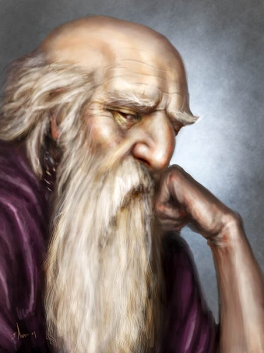

Personagens conhecidos em Portúmbria
Leroé Domarien
Estalajadeira
Raça: Tiefling
Localização: Três Coroas, Portúmbria
Descrição:
Na cidade portuária de Portúmbria, não há homem ou mulher que não conheça Leroé e sua estalagem. Essa tiefling consegue ao mesmo tempo ser muito receptiva com seus clientes e também amedrontadora e feroz quando há confusão no estabelecimento. Tem orgulho de ser quem é e por isso nunca se disfarça em forma humana, exibindo sempre seus chifres curvos em quase 2 metros de curvas e músculos.
Pilly Ambulante
Vendedor de Mapas
Raça: Humano
Localização: Praça do Tritão, Portúmbria
Descrição: Pilly também é figura conhecida de Portúmbria, principalmente pelos que estão visitando a cidade. Ele mantém uma banquinha humilde de madeira na principal praça da cidade, onde vende mapas feito por sí próprio para aqueles que acabaram de chegar na cidade.
Diosi Timburr
Guarda de Portúmbria
Raça: Humano
Localização: Portúmbria
Descrição: Diosi passava a maior parte do tempo bebendo com os colegas no Três Coroas, mas recentemente foi ordenado que rodasse a cidade atrás do assassino foragido Kettleback, o Lâmina Rubra. Desde então, o mais novo dos irmãos Timburr passa o dia no porto da cidade, entregando cartazes de procurado e interrogando os visitantes a respeito do tal assassino.

Kettleback, o Lâmina Rubra
Foragido
Raça: Humano
Localização: Desconhecida
Descrição:Back, Lâmina Rubra segue sendo procurado por todo o Sul, de forma que todos conhecem seu rosto e sua famosa cicatriz tantos são os cartazes de procurado espalhados pelas cidades. É procurado por ter assassinado à sangue frio o herdeiro real de Val-do-Rei. Atualmente a recompensa por sua cabeça chega a 15 Peças de Ouro.
